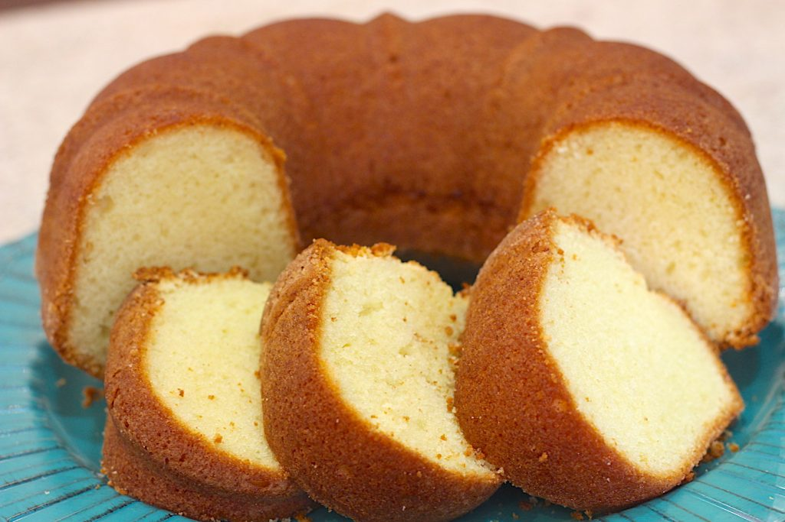
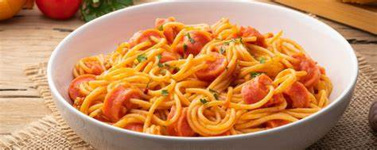

Bem-vindo ao seu guia culinário
Aqui você encontrará receitas práticas, sofisticadas e tradicionais, para qualquer ocasião. Desde jantares românticos até almoços em família, temos as melhores opções para você surpreender na cozinha.
Encontre as melhores receitas para todas as ocasiões
Aqui você encontrará receitas práticas, sofisticadas e tradicionais, para qualquer ocasião. Desde jantares românticos até almoços em família, temos as melhores opções para você surpreender na cozinha.
Um clássico delicioso, ideal para o café da tarde. Fácil de fazer e agrada a todos.
Uma receita italiana clássica, com molho caseiro e o toque de manjericão fresco.
Omelete recheado, prático e irresistível, perfeito para qualquer refeição.